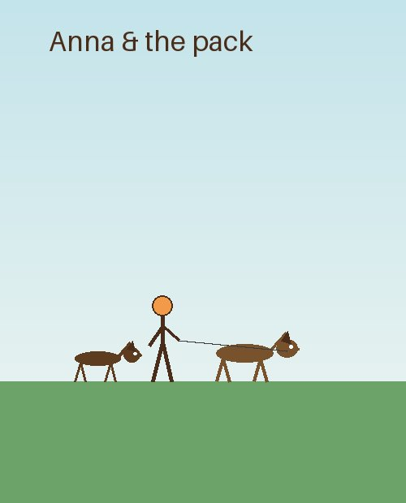

About Anna & the pack

Hi! My name is Anna Lindqvist and I have been walking dogs in Vaasa since 2021. It started when a neighbour broke his leg and I took his dog out for six weeks. Word spread, the phone started ringing, and suddenly I was the neighbourhood's dog walker.
Before this I worked shifts in a warehouse, so I know exactly how it feels to come home exhausted while a furry friend is bouncing by the door, ready to go out. That is the problem Happy Paws solves: your dog gets a proper walk even when your day says no. I am insured, first-aid trained for pets, and I never walk more than three dogs at a time.
Further down this page you can press play and hear a short audio greeting from me, see where our home base is on the map, and find all the ways to reach me.
Audio greeting
A three-second hello from Anna, saved as a small MP3 with a WAV fallback:
Where to find us
Our home base is at Sandviksgatan 15, a short walk from Vaasa market square. The map below is embedded from OpenStreetMap, the free map of the world.
Contact details
Happy Paws VaasaSandviksgatan 15, 65100 Vasa, Finland
Phone: +358 40 123 4567
Email: hej@happypawsvaasa.fi
Instagram: @happypawsvaasa
The fastest way to reach me is WhatsApp on the phone number above between 08:00 and 20:00. New customers always get a free 15-minute meet-and-greet so that your dog can decide whether I am acceptable company.